Direttore d'Orchestra
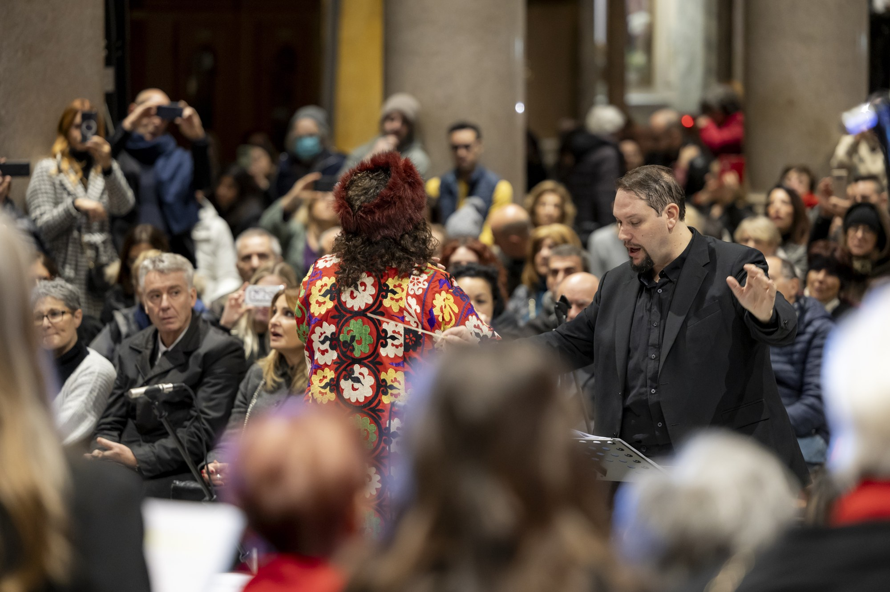
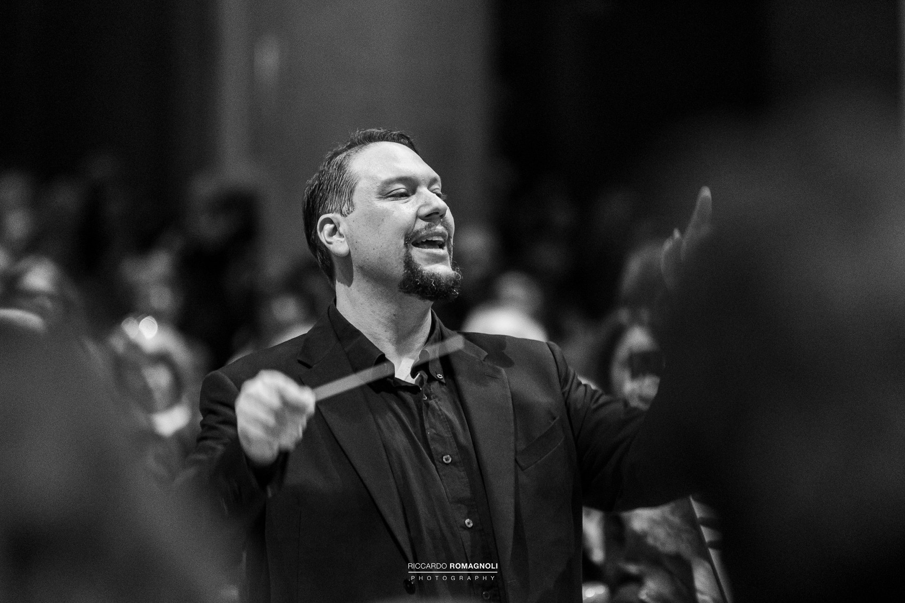
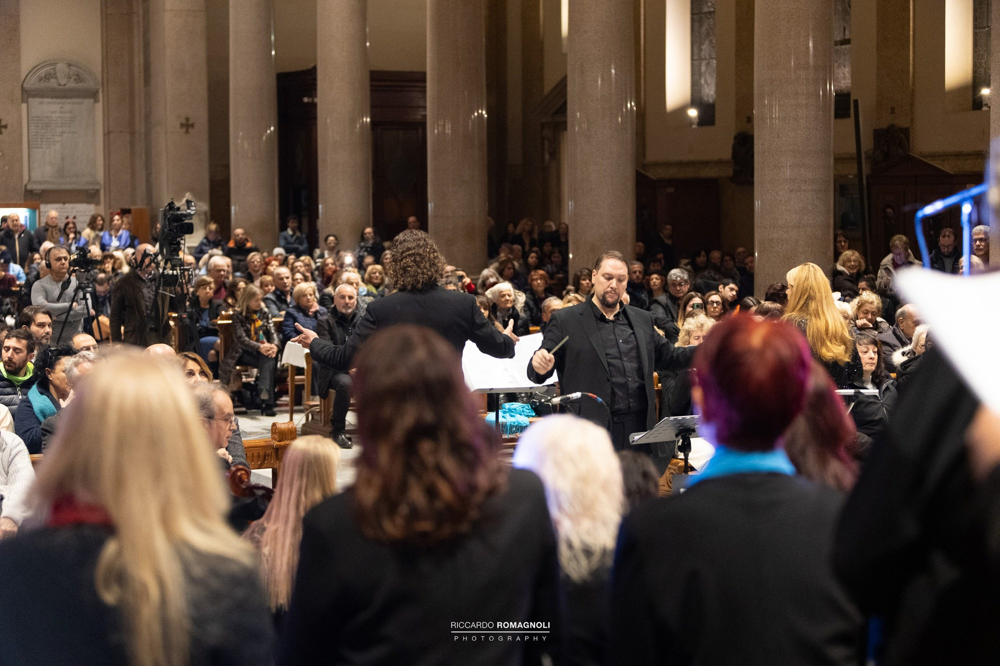
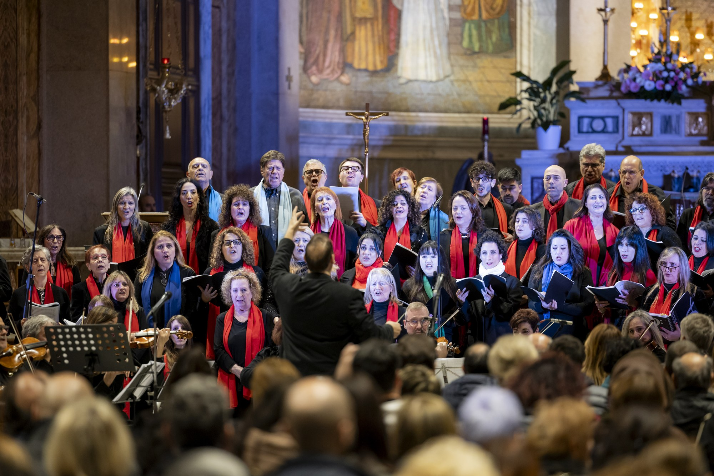
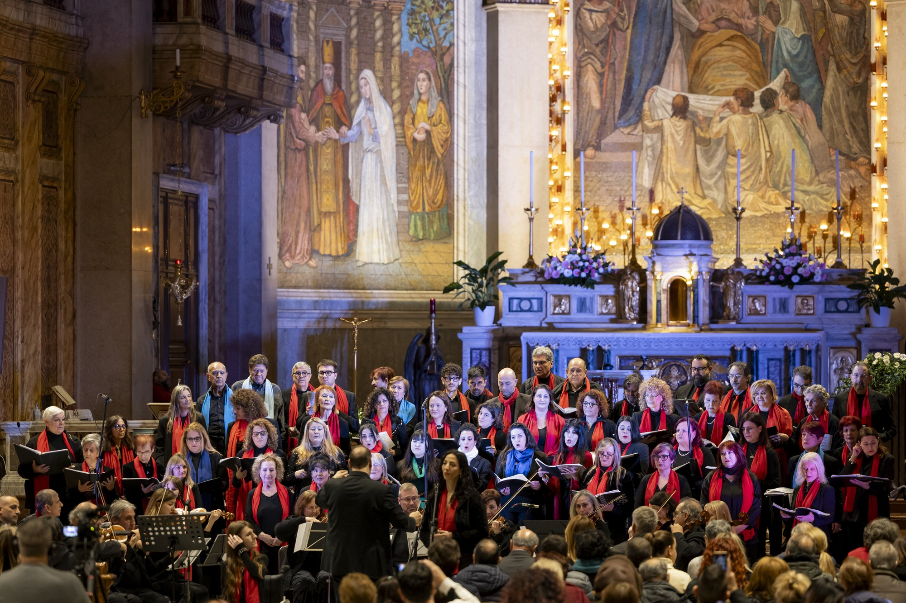
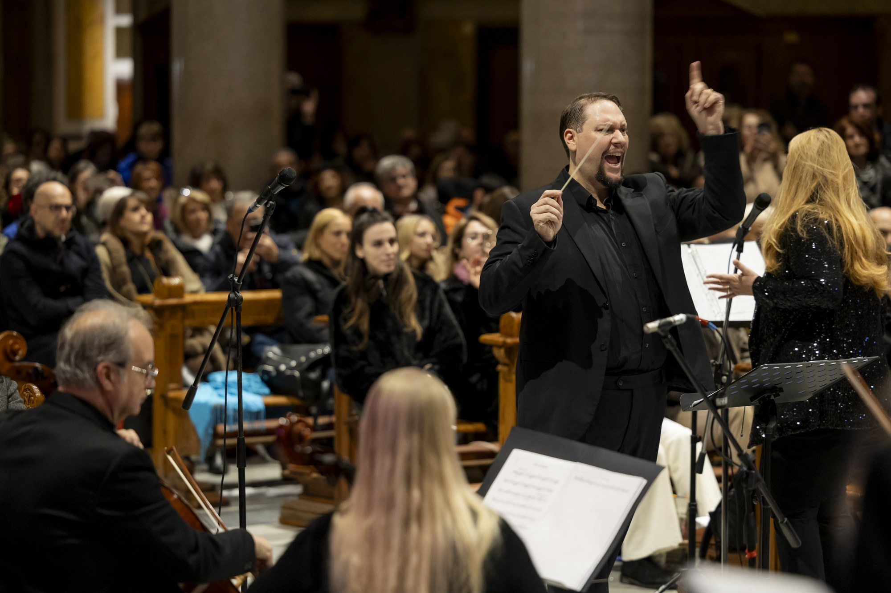
Ph: Riccardo Romagnoli Photography · Gianmarco Ciccotti
Direzioni selezionate
Don Giovanni — W.A. Mozart
Piazza San Biagio · Sacrofano (Roma) · 30/08/2026 · ore 21:00 · Ingresso libero
Regia: Fratelli Picone · Cembalo: Alessia Capoccia · Colosseum Chamber Orchestra
Ensemble Corale: VeioInCanto, Coro Mascagni, Coro Opera Project
Don Giovanni: Marco Severin · Leporello: Aurelio Palmieri · Donna Anna: Mariko Iizuka
Don Ottavio: Fabrizio Giovinazzi · Donna Elvira: Myoko Hirakawa · Zerlina: Laura Orlandi · Commendatore: Federico Masi
Patrocinio: Comune di Sacrofano · Regione Lazio · Parco di Veio
Don Giovanni — W.A. Mozart
Teatro DOMMA · Acilia (Roma) · 24/07/2026
Regia: Fratelli Picone · Cembalo: Hiroko Sato · Colosseum Chamber Orchestra
Ensemble Corale: VeioInCanto, Coro Mascagni, Coro Opera Project
Don Giovanni: Marco Severin · Leporello: Aurelio Palmieri · Donna Anna: Mariko Iizuka
Don Ottavio: Fabrizio Giovinazzi · Donna Elvira: Myoko Hirakawa · Zerlina: Laura Orlandi
Masetto: Andrea Jin Chen · Commendatore: Adalberto Prossedi
"Sotto al neve del mondo" — Concerto Natalizio
Coro Cantica Jubilate · Colosseum Symphony Orchestra · Piano: Enrica Ruggiero · Comune di Formello
"Voci di Luce" — II edizione
Basilica di San Giuseppe al Trionfale · Roma · oltre 100 coristi · Colosseum Chamber Orchestra · Federici's Band · Con Roberta Ammendola · Lega del Filo d'oro
La Traviata — G. Verdi
Piazza San Biagio · Sacrofano · Colosseum Chamber Orchestra · Coro VeioInCanto · Regia: Fratelli Picone
Violetta: Naho Yokohama · Alfredo: Fabrizio Giovinazzi · Germont: Marco Severin
Stabat Mater (Pergolesi) · Mozart · Rossini
Orchestra del Conservatorio S. Cecilia di Roma · Fondazione Consiglio Nazionale degli Ingegneri
L'Elisir d'Amore — G. Donizetti
Colosseum Symphony Orchestra · Teatro DOMMA · Acilia (Roma)
Cavalleria Rusticana — P. Mascagni
Palazzo Rospigliosi · Zagarolo · Orchestra Millenium
"Sotto la brezza dell'amore"
Piazza San Lorenzo · Formello · Colosseum Chamber Orchestra · Con Fabio Serani, Michela Vavaro, Roberta Ammendola · Luca Ward in audio
Cavalleria Rusticana — P. Mascagni
Rocca Colonna · Castelnuovo di Porto · Orchestra I.O.S. Rome
Direttore di Coro
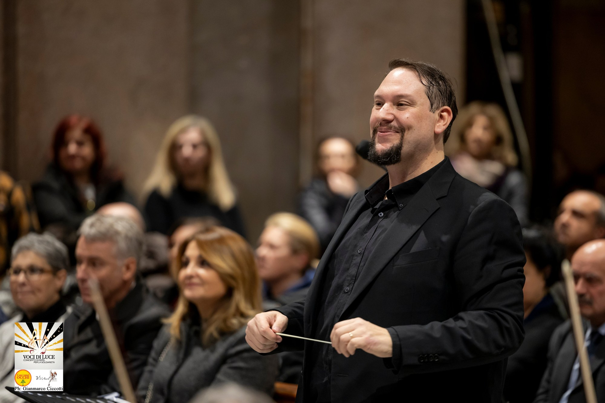
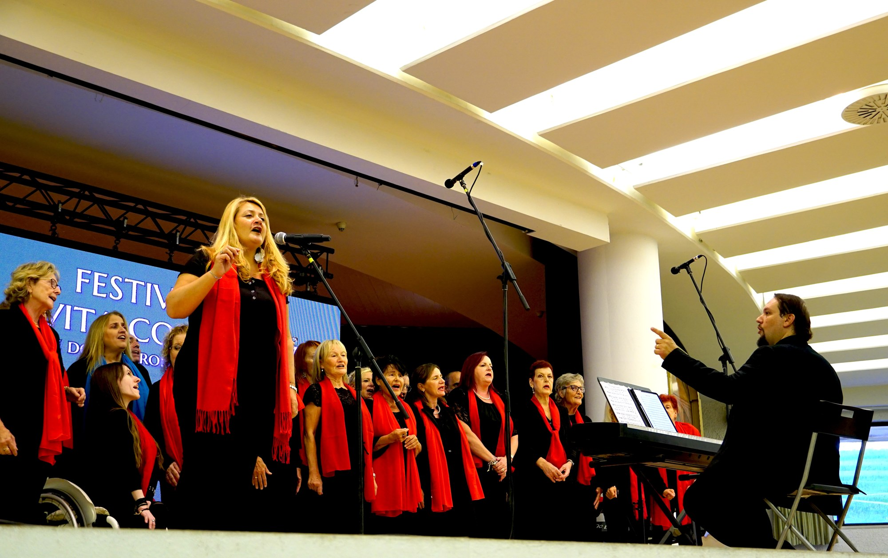
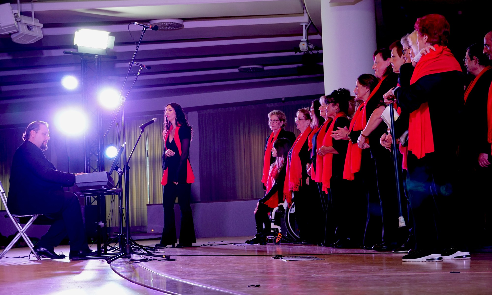
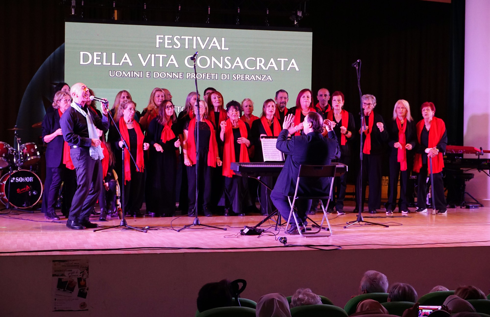
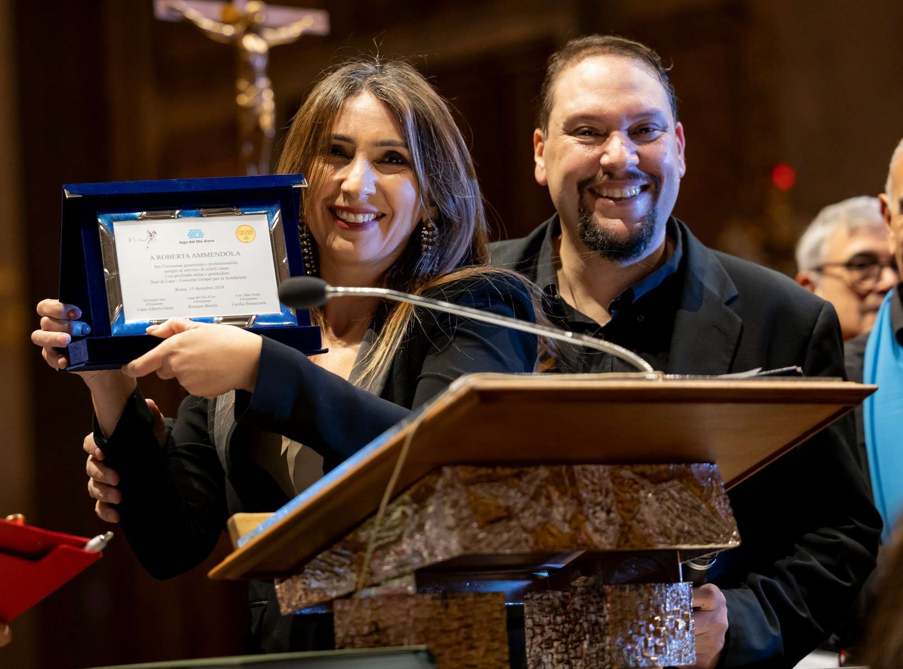
Festival della Vita Consacrata · "Voci di Luce" · con Roberta Ammendola · Premio Lega del Filo d'Oro
Cori diretti
Coro Gocce di Luce — UICI Roma
Progetto corale inclusivo · debutto giugno 2025 · Mediterranean Choral Festival of Albania (Tirana e Shkodra, novembre 2025)
Coro Cantica Jubilate
Composto da artisti di Enti e Fondazioni musicali romane
Coro VeioInCanto
Repertorio lirico e sinfonico-corale · territorio romano
AM Gospel Choir
Repertorio gospel, operistico e classico · concerti in tutta Italia
Direttore dei Cori — PeepArrow Entertainment / Teatro Sistina
Tutti Insieme Appassionatamente · Billy Elliot · Evita · Mamma Mia! · Accademia Teatro Sistina
I Cantori di Pietralata
S. Messa con Papa Francesco · diretta Vatican Media – CTV
LUMSA Gospel Singers
Vice Direttore · Concerto in presenza di S.S. Benedetto XVI · Sala Nervi (Vaticano) in mondovisione